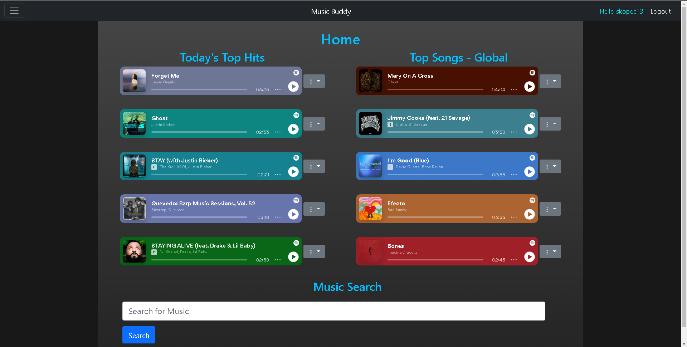
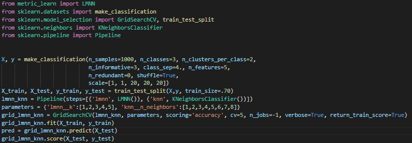
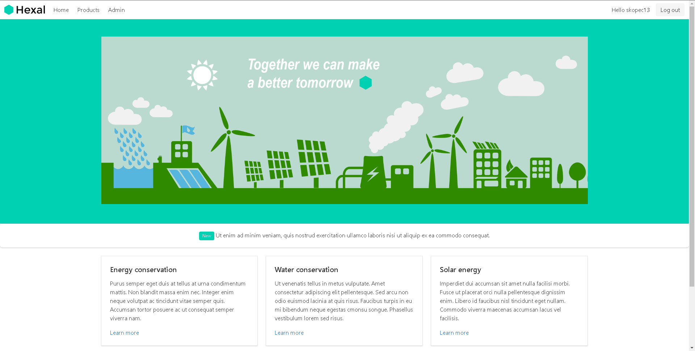
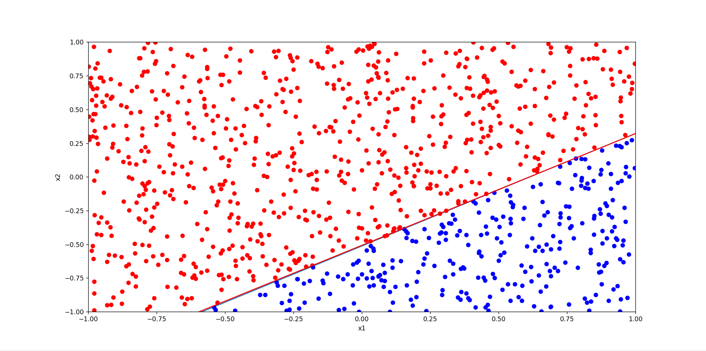
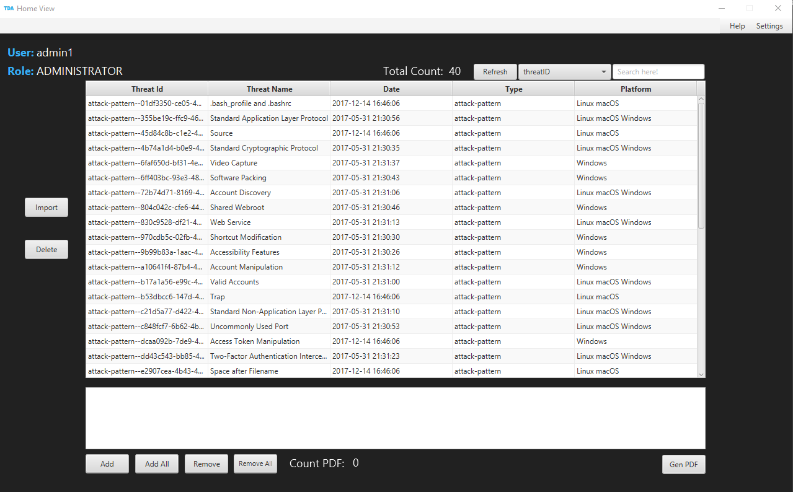

The goal of this project was to create an all in one social media and music web application.
This was achieved by using the Django Framework and Spotifty python API. This web app allowed for
music playback, playlist creation, and user interaction through profile and song comments.


Metric Learn is a libray from SKLearn that can be very powerful. Capable of creating metrics able to filter out the noise in data, inorder to help give more
accurate classifacations accomplished with machine learning methods

An introduction to user registration and authentication accomplished with AWS Amplify and Cognito. Capable of displaying the current logged in user,
initialize user into user pool after an automated verifaction link.

The Perceptron is an algorithm for supervised learning of binary classifiers.A binary classifier is a function which can decide whether or not an input,
represented by a vector of numbers, belongs to some specific class.

MITRE ATT&CK is a globally-accessible knowlege base of adversary tactices and techniques. Given data in the form of JSONs my goal was to parse the data, create an editable
table, and generate a modifiable pdf.